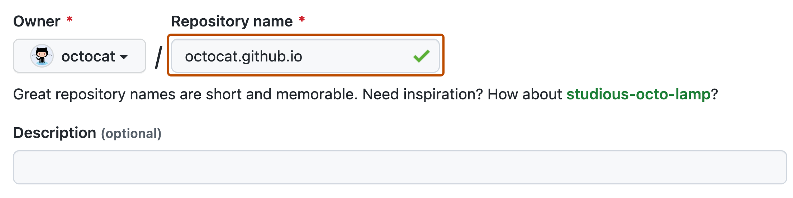
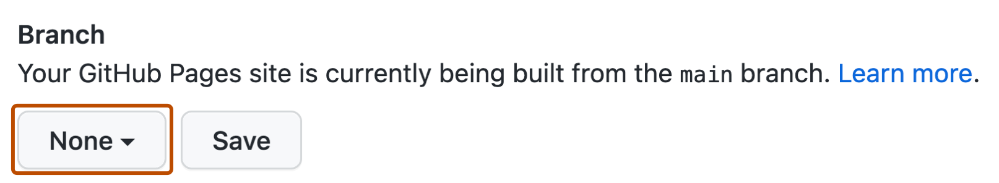

You can use GitHub Pages to showcase some open source projects, host a blog, or even share your résumé. This guide will help get you started on creating your next website.
Introduction
In this guide, you'll create a user site at <username>.github.io.
Creating your website
In the upper-right corner of any page, select , then click New repository.
Enter username.github.io as the repository name. Replace username with your GitHub username. For example, if your username is octocat, the repository name should be octocat.github.io.

Choose a repository visibility. For more information, see About repositories.
Toggle Add README to On.
Click Create repository.
Under your repository name, click Settings. If you cannot see the "Settings" tab, select the dropdown menu, then click Settings.
In the "Code and automation" section of the sidebar, click Pages.
Under "Build and deployment", under "Source", select Deploy from a branch.
Under "Build and deployment", under "Branch", use the branch dropdown menu and select a publishing source.

Optionally, open the README.md file of your repository. The README.md file is where you will write the content for your site. You can edit the file or keep the default content for now.
Visit username.github.io to view your new website. Note that it can take up to 10 minutes for changes to your site to publish after you push the changes to GitHub.
Changing the title and description
By default, the title of your site is username.github.io. You can change the title by editing the _config.yml file in your repository. You can also add a description for your site.
Click the Code tab of your repository.
In the file list, click _config.yml to open the file.
Click to edit the file.
The _config.yml file already contains a line that specifies the theme for your site. Add a new line with title: followed by the title you want. Add a new line with description: followed by the description you want. For example:
theme: jekyll-theme-minimal
title: Octocat's homepage
description: Bookmark this to keep an eye on my project updates!
When you are finished editing the file, click Commit changes.
Next Steps
You've successfully created, personalized, and published your first GitHub Pages website but there's so much more to explore! Here are some helpful resources for taking your next steps with GitHub Pages: